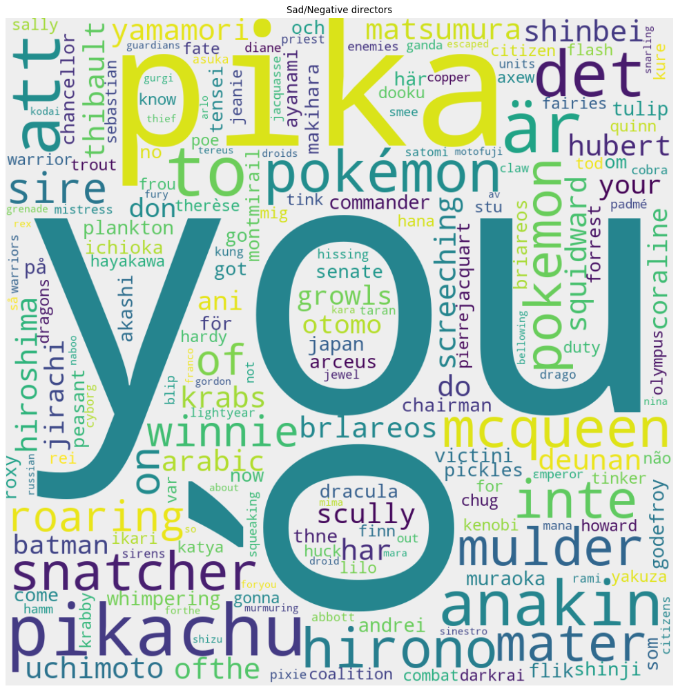
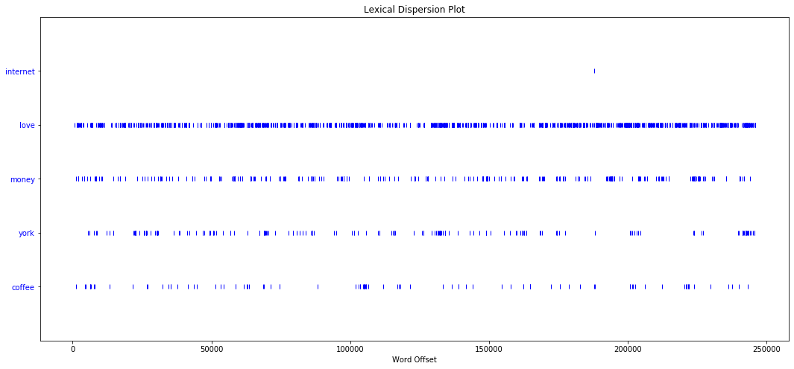

Introduction
When creating a movie, a director has the opportunity to shape every frame, every dialog as he/she likes, therefor giving an infinite number of possibilities when shooting a movie. However, often when we watch a new movie, we feel like "Oh, I have seen this before" or "It was too predictable". But what makes a movie redundant ? What are the codes and lazy habits ?
Our goal is to provide an overview of directors and how they link to each. We will create a network of directors where two directors are linked if they have hired any of the same actors. We want to find out what kind of network this is, who the most central directors are and whether there are any communities within it. On top of this we will analyse the subtitles for every movie of these directors.
Our dataset
The original Movies Dataset consists of 6 files:
- movies_metadata.csv: The main Movies Metadata file. Contains information on 45,000 movies featured in the Full MovieLens dataset. Features include posters, backdrops, budget, revenue, release dates, languages, production countries and companies.
- keywords.csv: Contains the movie plot keywords for our MovieLens movies. Available in the form of a stringified JSON Object.
- credits.csv: Consists of Cast and Crew Information for all our movies. Available in the form of a stringified JSON Object.
- links.csv: The file that contains the TMDB and IMDB IDs of all the movies featured in the Full MovieLens dataset.
- links_small.csv: Contains the TMDB and IMDB IDs of a small subset of 9,000 movies of the Full Dataset.
- ratings_small.csv: The subset of 100,000 ratings from 700 users on 9,000 movies.
Network Analysis
In this part we will analyse the network of directors. The nodes of the network are directors and two directors are connected if they have ever hired the same actor. The network consists of 1273 nodes and 217,725 edges. We will analyse the structure of the network and the centrality of nodes. Then we will analyse the communities of the network.

The network of directors
Degree Distribution
In this section we will take a closer look at the degree distribution and what it says about the network.
| The figure shows the degree distribution of the network. We see that the distribution is quite broad and most nodes have degrees between 100 and 300. |
Does the network structure resemble that of a random network?
The degree distribution of a random network does follow a Poisson distribution. To compare the degree distribution of our network with a Poisson we try to fit a normal distribution curve over the degree distribution to see how well it fits.
| As can be seen in the above figure, the destribution does not correspond very well to a normal distribution and hence the structure of the network is not like that of a random network. |
Is this a scale-free network?
A scale-free network is a network whose degree distribution follows a power law. (ch. 4 in networks book). The power law states that there are a lot of nodes with a very small degree and a few nodes with a very high degree. When plotting the degree distribution of a network that follows the power law with loglog axes it should resemble a straigh line (or close to that).
| It does not look like it follows the power law. Let's plot it using log-log axes. |
| It does not really follow the power law but it is still a very broad distribution meaning that the difference between the minum degree and the maximum degree is very large. |
Paradox is true 92.4 % of the time
In a nework with a power-law degree distribution the friendship paradox is true. The paradox states that almost everyone has fewer friends than their friends have on average. Meaning that the degree of most nodes is lower that the average degree of its neighbours. Even though we found that our network does not really have a power-law degree distribution the friendship paradox is still true for most nodes, so the network does still some property of a real-life network.
The small world property
Does the small world propery hold in our network? The small-world property states that the distance between two nodes is very small compared to the size of the network. The mathematical formula that states whether a netork has the small-world property is printed below (ch. 3 in Network Science book).
eq. 3.19 Network Science book
The equation states that the average distance between nodes should be approximately equal to the natural logarithm of n divided by the natural logarithm of the average degree.
Adding our values gives:

Are these number close enough to call the network a small world? We will say yes, and state that this is a small world network.
Conclusion regarding degree distribution
The network does not resemble a random network but it does not have a clear power-law degree distribution either. However the friendship paradox is true for 92.4% percente of the nodes and it does have the small world property. To sum up it does resemble a real-life network more than a random network.
Centrality
Degree Centrality
The degree of a node is the number of neighbours of the node, or rephrased as the number of other nodes the node is connected to.
Top 5
- Woody Allen
- Steven Spielberg
- Ridley Scott
- Martin Scorsese
- Oliver Stone
Betweeness centrality
Betweeness centrality indicates how many shortest paths go through a node and is therefore a good meassure of how central a node is in a network.
Top 5
- Ridley Scott
- Woody Allen
- Steven Spielberg
- Martin Scorsese
- Ron Howard
Eigenvector centrality
The eigenvector centrality measures the centrality of a node based on the centrality of its neighbours. If a node is connected to many nodes that have a high eigenvector centrality then that node will have high eigenvector centrality. This is an indicator of how high influence a node has in the network.
Top 5
- Steven Spielberg
- Woody Allen
- Ridley Scott
- Martin Scorsese
- Oliver Stone
The same three directors appear in the top 3 for all three centrality measures: Steven Spielberg, Woody Allen and Ridley Scott.
Who are these top three directors?First of all they are all very famous. Lets find their ratings, their vote count and how many movies they have directed.
| Steven Spielberg | Woody Allen | Ridley Scott | Average | Min | Max | |
|---|---|---|---|---|---|---|
| Rating | 6,894 | 6,692 | 6,604 | 6,23 | 3,45 | 8,0 |
| Vote Count | 62.266 | 15.512 | 43.083 | 3.379 | 501 | 67.239 |
| Number of movies | 33 | 49 | 24 | 8,30 | 1 | 66 |
| Genres | Drama, Adventure, Action | Comedy, Drama, Romance | Drama, Action, Thriller |
Most popular genres: Drama, Comedy, Thriller, Action, Romance |
||
Their vote count is high compared to the rest of the network, but their rating is not that high. This shows that directors who are central in the network do not necessary have a high rating. However their vote count is also an indicator of popularity or at least of how famous they are, and this is quite high for all of them. The fact that they all have a high number of movies is not surprising as this will of course give them a higher probality of being connected with other directors. Their genres are all very popular genres which also increases the likelihood that they share actors with other directors.
Community Detection
In this section we will describe the communities of the netork and analyse where these communities come from. We will do this by looking at some of the attributes that we have for the directors in our dataset.
We found the following communities
| Community | Size |
|---|---|
| 0 | 417 |
| 1 | 223 |
| 2 | 394 |
| 3 | 90 |
| 4 | 100 |
| 5 | 48 |
The modularity is 0,228. The modularity is above 0 which means that there are more edges within the communities than there are across communities. However the modularity is not that high which means that the community are not that well defined.

The communities of the network illustrated using different colors.
The plot above illustrates the communities using different colours for each community. We see that the network is split into three bigger parts and two smaller parts at the right and one small community inside another one
Analysis of communities
We will look at three different attributes: language, genre, active period and rating, to see if anything can be said about the communities regarding these. We want to find out if the communities can be distinguished using any of these attributes.
Languages
We have seperated the directors into groups of languages based on the language of their movies.

The figure shows a heatmap where each cell shows the percentage of the community that direct movies of that specific language. Community 3 and 5 seem to be based on language. Community 3 mostly has mostly directors of french movies and some italian movies, community 5 mostly directors of japanese and cantonese movies. The other communities have mostly directors of english movies however community 2 does have a higher percentage of movies of many of the smaller languages than the other communities.
Genres
We have created one group for each genre and added directors to the groups that they have worked whithin. One director might have worked in more than one genre.

The figure shows a heatmap where each cell shows the percentage of the community that have directed movies in that specific genre. As mentioned above, each directed might have worked in multiple genres therefor the percentages for one community do not add up to 100%.
We observe that all communities are a mix of multiple genres which makes sense since we know that directors and actors do not restrict themselves to a single genre. There are some genres that are quite common among all communities such as drama, comedy, romance, thriller and action. These are all genres that are somewhat general and a lot of movies will have these genres listed as their genre along with other more significant genres. There are however some differences between the communities that might be of significans. Communty 4 has directors working in multiple genres that are not as common in the other communities such as music, history, mystery, western and war. Community 5 has a high percentage of directors working in the genres foreign, fantasy and science fiction. Community 1 has a high percentage of directors working in the genres thrillers, mystery, horror and science fiction.
Active Period
We have created one group for each decade and add directors to the group if they were active in that decade. We define the active period of a director as the time from the release of the first movie to the release of the last movie.

The figure shows a heatmap where each cell is the percentage of the community that were active in that decade. A director can be active over a period of more than 10 years and hence can be in multiple groups. Therefor the percentages of each community do not add up to 100%. We observe that community 4 consists mainly of older movies. It makes sense that the directors of older movies are grouped together as not many of the same actors are acting in older as well as newer movies. We can also spot that directors of movies released after year 2000 are in community 0 and 2, while directors of movies from 1980-2000 are more dominant in community 1. Community 3 and 5 are not as concentrated on a specific period but are spread out from 1970 until 2020.
Rating
We have divided the ratings into 5 groups of equal size: low, medium-low, medium, medium-high and high. The directors are then added to the group for which their agerage rating falls within.

The figure shows a heatmap where each cell is the percentage of the community that have a rating in that group. There does not seem to be a high correlation between rating and communities. Community 0 and 1 have a larger part of low rating directors while community 2, 3 and 5 have a larger part of high rating directors. Community 4 has the largest part around the medium rating. However there is not a huge difference in the numbers.
Conclusion about communities
So what can we say about the communities? First of all, the modularity is not significantly high, so the communities are not that solid. We examined different groupings of the directors to see if there is a correlation with the found communities. We tried grouping the directors by language, by genre, by active period and by rating. We discovered the following about the communities:
- Community 0 consists almost solely of directors of english movies. Regarding active period it consists mostly of directors active in the recent decades.
- Community 1 also consist mainly of directors of english movies. It has a high percentage of directors working in drama, thrillers and action. Over half of the community has been rated below medium and most directors were active in the years 1980-2010.
- Community 2 has a higher number of percentage of directors working in many of the smaller languages than the other communities. It consists mainly of directors active after 1990. Almost haf of the community has been rated above average.
- Community 3 consists mainly of directors of french and italian movies. Most of the directors in that community are working with commedy and drama. The directors have been active in the last 50 or so years. Over half of the community has been rated above average.
- Community 4 is characteries as being the community of directors of older movies. Most directors were active in the years 1940-1990. The genres are also a bit different than of the other communities. These directors were working more in the genres music, history, mystery, western and war which are genres that were more popular a few decades ago than they are today.
- Community 5 consists mainly of directors of japanese and cantonese movies. These directors are directing foreign, fantasy and science fiction movies and a more than a third of the community has received a high rating.
The analysis showed that some of the communities seem to be defined by attributes such as language (3 and 5) and active period (4) while the others are more mixed and it's harder to distinguish what makes the community.
So in what communities are our most central directors?Our guess would be in the mixed communities 0, 1 or 2. These are afterall also the largest communities and they seem to hold the more mainstreem directors.
- Steven Spielberg: 2
- Woody Allen: 1
- Ridley Scott: 2
The most central nodes are indeed in communies 1 and 2.
Conclusion
The network we created consisted of movie directors which are connected if they have hired the
same actors. The structure of the network resembles that of a social network and the small world
property holds. The top three directors regarding centrality are all famous directors which have
directed a lot of movies and mostly work in the more popular genres.
We found 6 communities within the network and analysed these to find out what made these
communities. We found out that some of the communities seemed to be based on language and the
active periods of the directors while some were more a general mix.
Wordclouds
While working with our wordclouds, we found quickly which genres where linked together and by which environment. In appears that some genres are clustered together most of the time because of a serie of movie or some sort of synergy.


Sentiment analysis
In this section, we will take a closer look at what the text from movie subtitles can tell us about the movies and their authors, the directors!
Sentiment
Using LabMT wordlist downloaded from the article Temporal Patterns of Happiness and Information in a Global Social Network: Hedonometrics and Twitter's source files list. The file represents a set of 10,222 words, their average happiness evaluations according to users on Mechanical Turk and some other information that we are not using in this project.
We started by loading subtitles of our movies and making a token list out of them, removed stopword and calculated the sentiment value of each subtitle file and called this value the sentiment of the movie. In the figure, we can see the distribution of sentiment.
Distribution of Movie sentiment
Movie sentiments seem to be distributed normally. The numerical values for this data set are as follow:
- The average sentiment of movies is: 4.8984
- The standard deviation of movies is: 0.2850
Movies, in general, seem to be quite happy texts. If we compare these values to the values we found when analyzing political tweets of us politicians in assignment two of this subject, the average sentiment when removing the tweets with the sentiment value of 0 was around 4.3, which is still 0.5 lower than this data set. For more information on tweet analysis checkout our assignment 2 notebook
We can also notice that the standard deviation of movie sentiment is much lower than the tweet one. One of the possible reasons is probably due to the length of the movies being bigger.
Positive and negative movies
We then decided to take a look at the movies that stand out from the crowd. We selected the movies that were more than two standard deviations away from the mean. We called the movies with small values negative or sad movies and the movies with high sentiment values positive or happy movies.
With these restrictions we got
- 277 sad movies
- 37 happy movies
For both movie t sets, we computed their tf-ids and created the word cloud that will hopefully give us more inside to the words used in each of the extremes. The word clouds can be seen in the figures below:
Word cloud generated from sad/negative movies
Word cloud generated from happy/positive movies
The word cloud is not as representative as we hoped.
Anyway, there were quite some words we expected in positive movies. For example, Christmas seems to be present in happy movies a lot. We also noticed some Spanish words the clouds, for example, chica that seems to be a popular word in positive movies. In our great surprise word, Bieber seems to be the most represented word in positive movies set. Words like youtube and applejack also surprised us.
The negative movie word cloud surprised us more. This is mostly due to us only having sentiment scores for the English language. This analysis could be improved by adding sentiment values for other languages. Anyway, words like chffffff seem to have no real meaning. There were also a lot of words that seem like stopword from other languages. There were also quite a few words that seem were to be expected in the sad movie set, for example screeching, danger, justice, army and so on.
Sentiment of directors
We then grouped the movies of each director. We were again interested in the distribution of sentiment of each director. The results can be seen in the figure below:
Distribution of Directors sentiment
There is no surprise that the sentiment is again distributed normally. The numerical values are as follows:
- The average sentiment of directors work is: 4.9084
- The standard deviation of directors work is: 0.1878
Again the sentiment of the director's work is even higher than the tweeter one. It is also higher than the average movie sentiment.
Positive and negative Directors
We again selected happy/positive and sad/negative directors using the same criteria as with movies to get two sets of directors.
The sizes of the sets are as follows:
- 43 sad directors
- 19 happy directors
For reasons stated before we are not surprised that there are quite a few non-English speaking directors in the negative set since most of their work is not in English.
We again generated word clouds for each director group and got the following word clouds

Word cloud generated from sad/negative directors
Word cloud generated from happy/positive directors
The results of positive and negative director work surprised us a lot. Words like Pikachu, Pika, Anakin, and words like that surprised us a lot. The Positive word cloud was even weirder. There where almost only names in it and maybe some words that we could make sense of, for example, pajamas
Central Directors
We focused on three directors that were in the most central nodes in most of the centrality measures. We did in the network analysis part of this project for the following three Directors:
- Ridley Scott
- Woody Allen
- Steven Spielberg
We first took a look at their sentiment in comparison to other directors. This can be seen very well in figure bellow
Distribution of directors sentiment with central directors
It comes as no surprise that out of these three, Woody Allen has the highest sentiment since he is known more for his work in romantic and drama genres of movies. Both Ridley Scott know for Alien, Blade Runner, Gladiator ... and Steven Spielberg is known for Jaws, Jurassic Park, Schindler's list ... are more of directors that normally produce a bit darker movies, and therefore have a lower average sentiment.
We also generated the word clouds comparing and representing their work.
Word cloud generated from Ridley Scott's movies
Word cloud generated from Woody Allen's movies
Word cloud generated from Steven Spielberg's movies
In Ridley Scott word clouds there are quite a few names from greek mythology, such as Maximus, Hermes, and Ramses which comes as no surprise. There are also words like rover and starling that point to more fantasy/space movies.
Woody Allen uses words like actresses, sexy and novel a lot which also comes as no surprise since his style is more romantic and easy-going.
Steven Spielberg uses words like the grail, nicht, and ark in his work, which tells us something about his more adventure colored movies. As with the other two directors, a lot of words in clouds are the character names, especially if there are more movies with the same characters.
Just by analyzing word clouds of different directors, we can tell something about their style. Both Ridley Scott and Steven Spielberg make more action and sci-fi movies when Allen produces mostly drama movies.
Language diversity for directors
We also analyzed the language diversity used by directors.
What even is language diversity.
We call language diversity the measure of how many different words are used in directors' vocabulary compared to their vocabulary size.
We can see the language diversity distribution of director's work in figure bellow
Distribution of language diversity of directors
As expected the distribution of language diversity seems to be normal. Again the numerical values are as follows:
- Average language diversity of directors work is: 0.2229
- Standard language diversity of directors work is: 0.0770
It seems like this measure alone doesn't tell us much about directors. We see that popular directors are the ones that have really low diversity value, but that is mainly due to them having made a lot of movies.
Lets again take a look at the central director's ant their diversity. These measures are the best represented in the figure below.
Distribution of language diversity of directors with central direcotrs
We suspect that the reason for their low diversity is mostly due to them having made a lot of movies, and therefore even if they are having really big vocabulary still doesn't outweigh the combined length of their work
Most used words for directors
We also looked at the distribution of most used words in each of the highest centrality directors' work. We did that by selecting the 75 most used words in their work by counting it and sorting it. We then plotted the results in the next figures.
Ridley Scott's movies word usage distribution
Woody Allen's movies word usage distribution
Steven Spielberg's movies word usage distribution
We can see that the frequencies look quite similar for all directors. This is probably due to the common words used in everyday English that outweigh the ones that may represent each individual director..
Most used words for directors
We were also interested in how movies changed over time. To get an inside in this kind of information we used lexical dispersity visualization. This is done marking each occurrence of a word in text by a small line and then plotting the graph. With this, we get an inside on how texts change over time.
For this need, we ordered all of our movie data by their release date, and then join them all together. We tried generating the plots for quite some words, some of them are representative and some of them just seem to be too common to tell us anything about the change in the language used.
Dispersity plot: TODO
Dispersity plot: TODO
Dispersity plot: TODO
For example, if we take a look at the dispersity plot of the word Indy, we get the rough placement of Indiana Jones movies that was brought to life by Steven Spielberg and George Lucas and played by Harrison Ford. We also plotted some other words that are specific to famous movies, for example, Potter, Bond, Batman, Jedi...
We also tried doing the same for the directors with the highest centrality. We again selected their work and picked out some words that seem to be interesting for each of the selected directors, and some universal ones.
Ridley Scott's dispersity plot

Woody Allen's dispersity plot
Steven Spielberg's dispersity plot
Again we can see that word love is used a lot more in the Woody Allen than in any other Directors work
Director community sentiment
We also tried to check if there are any noticeable differences between the communities of directors described in the network analysis part of this assignment. The combined sentiments can be observed in the figure below.
Distribution of community sentiments
| Community | Mean | Standard deviation |
|---|---|---|
| Community 1 | 4.9592 | 0.2111 |
| Community 2 | 4.9248 | 0.1334 |
| Community 3 | 4.8870 | 0.1835 |
| Community 4 | 4.8646 | 0.1519 |
| Community 5 | 4.8463 | 0.1372 |
| Community 6 | 4.7859 | 0.2184 |
The last community's sentiment is lower than others, we mostly assume that is due to there being a lot of foreign directors in that community.